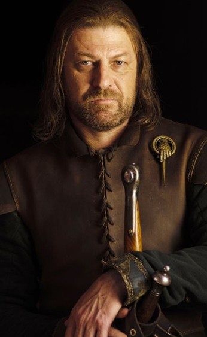
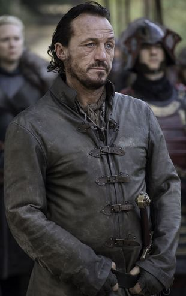
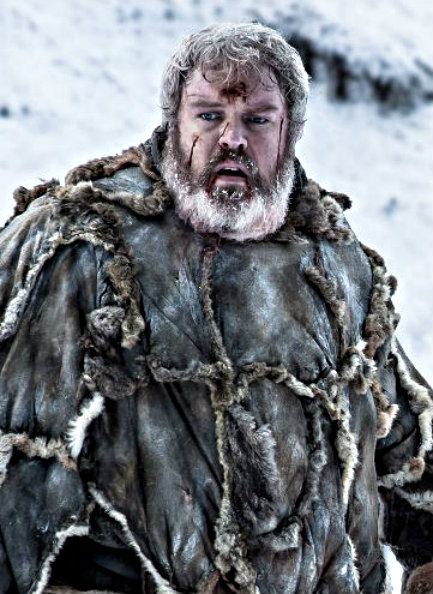

Haus Baratheon
 Haus Baratheon war eines der großen Häuser von Westeros. Es herrschte seit den Eroberungskriegen als Hochlords über die Sturmlande von ihrem Sitz Sturmkap aus.
Haus Baratheon war eines der großen Häuser von Westeros. Es herrschte seit den Eroberungskriegen als Hochlords über die Sturmlande von ihrem Sitz Sturmkap aus.
Gründer des Hauses war Orys Baratheon, ein angeblicher Halbbruder von Aegon Targaryen. Er heiratete Argella Durrandon, die Tochter des letzten Sturmkönigs aus dem Haus Durrandon, und übernahm deren Wappen und Wahlspruch.
Ihr Wappen zeigte einen schwarzen Hirsch, später einen gekrönten schwarzen Hirsch, auf goldenem Grund. Ihr Wahlspruch lautete "Unser ist der Zorn".
Das Haus stieg nach Roberts Rebellion zum neuen Königshaus auf. Robert Baratheon bestieg als erster der Baratheon-Dynastie den Eisernen Thron. Er teilte die Sturmlande und die eroberten Kronlande unter sich und seinen beiden Brüdern Stannis und Renly Baratheon auf. So entstanden drei Blutlinien, welche nach Roberts Tod im Krieg der Fünf Könige gegeneinander um dessen Erbe kämpften:
Robert Baratheon
 Robert Bartaheon war der Erstgeborene Sohn von Lord Steffon Baratheon und Lady Cassana Baratheon (geborene Estermont). Seine beiden Brüder waren Stannis und Renly. Steffon war das Oberhaupt des Hauses Baratheon und oberster Herr der Sturmlande. Die Sturmlande sind eins der Sieben Königslande und das Haus Baratheon ist eines der großen Häuser des Reiches. Seine Eltern verlor er in jungen Jahren durch ein Schiffsunglück bei einem Sturm. Robert stand gemeinsam mit Stannis auf den Mauern von Sturmkap und beide sahen, wie das Schiff ihrer Eltern, die aus Essos zurückkehrten, an den Felsen zerschellte. Er erbte die Herrschaft und wurde unter die Obhut von Jon Arryn genommen, dem Oberhaupt des Hauses Arryn, einem anderen Großen Haus. Eddard Stark, genannt Ned, der zweite Sohn aus dem Hause Stark, wurde ebenfalls von Jon Arryn erzogen. Er und Robert wurden wie Brüder füreinander.
Robert Bartaheon war der Erstgeborene Sohn von Lord Steffon Baratheon und Lady Cassana Baratheon (geborene Estermont). Seine beiden Brüder waren Stannis und Renly. Steffon war das Oberhaupt des Hauses Baratheon und oberster Herr der Sturmlande. Die Sturmlande sind eins der Sieben Königslande und das Haus Baratheon ist eines der großen Häuser des Reiches. Seine Eltern verlor er in jungen Jahren durch ein Schiffsunglück bei einem Sturm. Robert stand gemeinsam mit Stannis auf den Mauern von Sturmkap und beide sahen, wie das Schiff ihrer Eltern, die aus Essos zurückkehrten, an den Felsen zerschellte. Er erbte die Herrschaft und wurde unter die Obhut von Jon Arryn genommen, dem Oberhaupt des Hauses Arryn, einem anderen Großen Haus. Eddard Stark, genannt Ned, der zweite Sohn aus dem Hause Stark, wurde ebenfalls von Jon Arryn erzogen. Er und Robert wurden wie Brüder füreinander.
Stannis Baratheon
Stannis Baratheon war einer der Ersten, die erfuhren, dass Roberts angebliche Kinder eigentlich die von Cersei und Jaime sind. Seinen Verdacht äußerte er der damaligen Hand des Königs, Jon Arryn. Gemeinsam fanden die beiden dann heraus, dass Joffrey, Tommen, und Myrcella Bastarde der Königin sind. Stannis ist der zweitgeborene Sohn des Hauses Baratheon, der jüngere Bruder von Robert Baratheon und der ältere von Renly Baratheon. Er diente im Kleinen Rat seines Bruders und trägt den Titel "Lord von Drachenstein". Während der ersten Staffel ist Stannis verreist. Nachdem Joffrey Baratheon zum neuen König ernannt wurde, der aus einer inzestuösen Affäre heraus entstand, erklärt er sich zum rechtmäßigen König.
Renly Baratheon
Renly Baratheon war der Sohn von Steffon Baratheon, dem Oberhaupt des Hauses Baratheon, einem der mächtigsten Häuser in Westeros und Gebieter über die Sturmlande. Renly hatte zwei ältere Brüder, Robert und Stannis. Als Steffon starb, erbte Robert seinen Titel und führte eine erfolgreiche Rebellion gegen König Aerys II. Targaryen. Nach seinem Sieg bestieg Robert als neuer König den Eisernen Thron und machte seinen jüngeren Bruder zum Lord über Sturmkap. Während des Krieges war Renly noch ein Kind und nahm deshalb nicht an Kampfhandlungen teil.
Joffrey Baratheon
Von Jofftrey Baratheon wurde angenommen, dass er ältester Sohn und Erbe von König Robert Baratheon und Königin Cersei Lennister sei, die eine politisch motivierte Ehe eingingen, nachdem Robert den Eisernen Thron in der Rebellion vom Irren König Aerys II. Targaryen übernommen hatte. In Wirklichkeit war sein Vater Jaime Lennister, der Zwillingsbruder der Königin und Ritter der Königsgarde. Joffrey hatte eine jüngere Schwester, Myrcella, und einen jüngeren Bruder, Tommen, die ebenfalls dem Inzest zwischen Jaime und Cersei entstammen.
Myrcella Baratheon
Es wird gemeinhin angenommen, dass Prinzessin Myrcella Baratheon die einzige Tochter von König Robert Baratheon und Königin Cersei Lennister ist. Zweck der Ehe zwischen Cersei und Robert war eine Allianz ihrer beiden mächtigen Häuser, die als Sieger aus der Rebellion gegen den Irren König, Aerys II. Targaryen, hervorgegangen waren. Myrcella hat einen älteren Bruder, Joffrey, und einen jüngeren, Tommen. Der wirkliche Vater aller drei Kinder ist Jaime Lennister, der Zwillingsbruder ihrer Mutter. Myrcella besuchte oft Turniere mit ihrem vermeintlichen Vater König Robert und ist bekannt für ein liebenswertes und ruhiges Gemüt, das besonders ihr Onkel Tyrion schätzt.
Tommen Baratheon
Tommen Baratheon war ein Prinz der Sieben Königslande und der jüngste Sohn von König Robert Baratheon und Königin Cersei Lennister. Allerdings ist sein leiblicher Vater Jaime Lennister, der Zwillingsbruder von Cersei. Er hat zwei ältere Geschwister: einen Bruder, Joffrey Baratheon, und eine Schwester, Myrcella. Tommen und Myrcella begleiteten ihren vermeintlichen Vater König Robert oft auf seinen Reisen. Wie seine Schwester ist Tommen einer der wenigen, die ein gutes Verhältnis zu Tyrion Lennister pflegen. Im Gegensatz zu seinem Bruder Joffrey ist Tommen gutmütig und schweigsam. Er gilt als zurückhaltendes, schüchternes Kind. Da sein Bruder Joffrey als "schwieriges" Kind galt, wurde Tommen von seiner Mutter besonders wohlbehütet erzogen. Nach Joffreys Tod wurde Tommen zum neuen König der Sieben Königslande ernannt.
Haus Graufreud
 Das Haus Graufreud von Peik ist eines der Großen Häuser von Westeros. Es herrscht über die Eiseninseln, einer rauen und trostlosen Ansammlung von Inseln an der Westküste des Kontinents. Ihr Stammsitz ist die Burg Peik auf der gleichnamigen Insel. Das Oberhaupt trägt den Titel Lord Schnitter von Peik.
Das Haus Graufreud von Peik ist eines der Großen Häuser von Westeros. Es herrscht über die Eiseninseln, einer rauen und trostlosen Ansammlung von Inseln an der Westküste des Kontinents. Ihr Stammsitz ist die Burg Peik auf der gleichnamigen Insel. Das Oberhaupt trägt den Titel Lord Schnitter von Peik.
Das Wappen des Hauses Graufreud zeigt einen goldenen Kraken auf schwarzem Grund. Ihr Sinnspruch lautet "Wir Säen Nicht."
Balon Graufreud
Balon Graufreud ist das Oberhaupt des Hauses Graufreud, einem der großen Häuser von Westeros, und Herrscher über die Eiseninseln. Er regiert von Peik aus über die Inseln und trägt daher den Titel Lord Schnitter von Peik. Balon ist ein rauer, rücksichtsloser und ambitionierter Mann und ist mit Alannys aus dem Hause Harlau verheiratet. Sie hatten vier gemeinsame Kinder: Rodrik, Maron, Theon und ihre einzige Tochter Asha.
Acht Jahre vor dem Beginn der Handlung in der Serie erklärte sich Balon selbst zum König der Eiseninseln und trug die Krone von Salz und Fels. Er führte eine Rebellion gegen den Eisernen Thron, auf dem Robert Baratheon saß, um die alten Gebiete der Eisenmänner, die sich an der westlichen Küste befanden, wieder zurückzuerobern. Der Aufstand wurde in einem blutigen Krieg niedergeschlagen, dem seine beiden älteren Söhne nicht überlebten. Zur Sicherung des Friedens musste er seinen letzten Sohn, Theon, als Geisel an Lord Eddard Stark übergeben. Ohne einen männlichen Erben konzentrierte sich Balon darauf, seine Tochter Asha auf die Herrschaft vorzubereiten.
Euron Graufreud
Euron Graufreud ist ein Mitglied des Hauses Graufreud. Er ist der jüngere Bruder von Balon Graufreud, dem Oberhaupt des Hauses, Lord Schnitter von Peik. Außerdem ist er der Onkel von Asha und Theon Graufreud.
Kurz nachdem sich Balon zum König der Eiseninseln erhob, führte Euron den Überfall auf Lennishort an und setzte die gesamte Flotte von Tywin Lennister in Brand. Es war die erste kriegerische Handlung in der Graufreud-Rebellion und gab den Eisenmännern für eine Zeit die Kontrolle über das Meer der Abenddämmerung und weite Küstengebiete im Westen von Westeros. Euron war augenscheinlich bei der Belagerung von Peik anwesend, bei der er den Durchbruch beobachtete und mit ansah, wie Balons zweiter Sohn Maron Graufreud starb.
Asha Graufreud
Asha Graufreud wurde auf der Insel Peik geboren und wuchs dort auf. Sie ist Balons und Alannys drittes Kind und ihre einzige Tochter. Acht Jahre vor den Ereignissen der Serie erhob sich Balon in einer Rebellion gegen den Eisernen Thron, welche blutig niedergeschlagen wurde. Ashas ältere Brüder Rodrik und Maron fielen in der Schlacht, während ihr jüngerer Bruder Theon an Lord Eddard Stark als Geisel übergeben wurde, um Balons Loyalität und Gehorsam zu sichern.
Theon Graufreud
 Theon Graufreud ist der Sohn und Erbe von Lord Balon Graufreud, dem Herrscher der Eiseninseln, und der Bruder von Asha Graufreud.
Theon Graufreud ist der Sohn und Erbe von Lord Balon Graufreud, dem Herrscher der Eiseninseln, und der Bruder von Asha Graufreud.
Neun Jahre vor der Serienhandlung erhoben sich die Eiseninseln in einer Rebellion gegen den Eisernen Thron, die jedoch von König Robert Baratheon und Lord Eddard Stark niedergeschlagen wurde.
Lord Balon ergab sich, und ihm wurde erlaubt, weiterhin über die Eiseninseln zu herrschen. Im Gegenzug musste er aber seinen einzigen verbliebenen Sohn im Alter von acht Jahren als Geisel und Mündel an Eddard Stark übergeben. Trotz seines Gefangenenstatus wurde Theon im Hause Stark gut behandelt und zu einem der engsten Freunde von Eddards Sohn Robb. Theon ist ein ausgezeichneter Bogenschütze.
Haus Lennister
 Haus Lennister von Casterlystein (im Original: House Lannister of Casterly Rock) ist eines der großen Häuser von Westeros. Es gehört zu den reichsten, mächtigsten und ältesten Dynastien. Ihre Ländereien liegen im äußersten Westen des Kontinents, mit einst sehr produktiven Goldminen. Ihr Sitz ist Casterlystein, eine mächtige Festung auf einem Felsvorsprung mit Blick auf das Meer der Abenddämmerung. Am Fuß von Casterlystein liegt Lennishort, die drittgrößte Stadt von Westeros. Sie sind die Herrscher über die Westlande und Wächter des Westens. Oberhaupt des Hauses und Lord von Casterlystein war Tywin Lennister.
Haus Lennister von Casterlystein (im Original: House Lannister of Casterly Rock) ist eines der großen Häuser von Westeros. Es gehört zu den reichsten, mächtigsten und ältesten Dynastien. Ihre Ländereien liegen im äußersten Westen des Kontinents, mit einst sehr produktiven Goldminen. Ihr Sitz ist Casterlystein, eine mächtige Festung auf einem Felsvorsprung mit Blick auf das Meer der Abenddämmerung. Am Fuß von Casterlystein liegt Lennishort, die drittgrößte Stadt von Westeros. Sie sind die Herrscher über die Westlande und Wächter des Westens. Oberhaupt des Hauses und Lord von Casterlystein war Tywin Lennister.
Das Wappen des Hauses zeigt einen aufsteigenden goldenen Löwen auf rotem Grund. Ihr offizieller Sinnspruch lautet: "Hört mich brüllen!", welcher aber nur selten erwähnt wird. Weiter verbreitet ist ihr inoffizieller Wahlspruch "Ein Lennister begleicht stets seine Schuld.", der sowohl im positiven als auch im negativen Zusammenhang verwenden werden kann.
Tywin Lennister
 Tywin Lennister ist der älteste Sohn von Titos Lennister. Er hat einen jüngeren Bruder Kevan Lennister. Er ist das Oberhaupt von Haus Lennister, welches über die Westlande herrscht. Sein Vater galt im Gegensatz zu ihm als besonnen und gutherzig. Er war jedoch ein schwacher Herrscher und hätte Haus Lennister beinahe zerstört. Das Haus Regn sah in der Schwäche des Lennister-Oberhauptes seine Gelegenheit, sich gegen dessen Herrschaft aufzulehnen, um die Macht in den Westlanden an sich zu reißen. Da Titos sich nicht imstande fühlte, dieser Rebellion etwas entgegenzusetzen, übernahm der junge Tywin das Kommando über die Truppen der Lennister. Tywin konnte die Rebellion niederschlagen. Um die Macht seines Hauses wiederherzustellen, statuierte Tywin an ein Exempel, indem er Castamaer den Stammsitz des Hauses Regn niederbrennen ließ. Dieses neue Selbstbewusstsein des Hauses Lennister, welches von Tywins kompromisslosem Vorgehen gegen die Regns ausging, wird im Lied "Die Regen von Castamaer" aufgegriffen, welches sich über die Jahre unter den Soldaten in ganz Westeros verbreitete und gemeinhin als Lied des Hauses Lennister gilt.
Tywin Lennister ist der älteste Sohn von Titos Lennister. Er hat einen jüngeren Bruder Kevan Lennister. Er ist das Oberhaupt von Haus Lennister, welches über die Westlande herrscht. Sein Vater galt im Gegensatz zu ihm als besonnen und gutherzig. Er war jedoch ein schwacher Herrscher und hätte Haus Lennister beinahe zerstört. Das Haus Regn sah in der Schwäche des Lennister-Oberhauptes seine Gelegenheit, sich gegen dessen Herrschaft aufzulehnen, um die Macht in den Westlanden an sich zu reißen. Da Titos sich nicht imstande fühlte, dieser Rebellion etwas entgegenzusetzen, übernahm der junge Tywin das Kommando über die Truppen der Lennister. Tywin konnte die Rebellion niederschlagen. Um die Macht seines Hauses wiederherzustellen, statuierte Tywin an ein Exempel, indem er Castamaer den Stammsitz des Hauses Regn niederbrennen ließ. Dieses neue Selbstbewusstsein des Hauses Lennister, welches von Tywins kompromisslosem Vorgehen gegen die Regns ausging, wird im Lied "Die Regen von Castamaer" aufgegriffen, welches sich über die Jahre unter den Soldaten in ganz Westeros verbreitete und gemeinhin als Lied des Hauses Lennister gilt.
Cersei Lennister
Cersei Lennister ist die erste und einzige Tochter von Tywin Lennister und Joanna Lennister von Casterlystein. Sie und ihr jüngerer Zwillingsbruder Jaime kommen gemeinsam auf die Welt. Als sie vier Jahre alt ist, verstirbt ihre Mutter bei der Geburt ihres Bruders Tyrion. Cersei versteht den Tod ihrer Mutter nicht, verabscheute ihren Bruder und macht ihn, ebenso wie ihr Vater, für ihren Tod verantwortlich.
Jaime Lennister
 Jaime Lennister ist der älteste Sohn von Lord Tywin und Lady Joanna Lennister von Casterlystein. Er ist der Zwillingsbruder von Cersei und der ältere Bruder von Tyrion.
Jaime Lennister ist der älteste Sohn von Lord Tywin und Lady Joanna Lennister von Casterlystein. Er ist der Zwillingsbruder von Cersei und der ältere Bruder von Tyrion.
Jaime hegt wenig Interesse für die politischen Vorgänge und Intrigen in Westeros. Er sieht sich selbst als geborenen Krieger, dessen Bestimmung es ist, alle seine Feinde zu töten. Lebendig fühlt er sich nur im Kampf um Leben und Tod und bei seiner Schwester. Im Gegensatz zu dieser betrachtet er jedoch auch seinen jüngeren Bruder als gleichwertig und versteht sich so gut mit ihm, dass er jederzeit für dessen Leben eintreten würde.
Tyrion Lennister
 Tyrion Lennister ist der jüngste Sohn von Lord Tywin Lennister und der jüngere Bruder von Jaime und Cersei Lennister. Er ist kleinwüchsig, wodurch er Problemen ausgesetzt ist, die jedoch durch seine hohe soziale Stellung, den Reichtum und die Macht seiner Familie abgeschwächt werden. Er hat kein gutes Verhältnis zu seinem Vater, welcher ihm die Schuld für den Tod seiner Mutter gab und ihn noch am Tag seiner Geburt ins Meer werfen wollte. Ungeachtet ihrer Differenzen genießt Tyrion dennoch den Schutz, den es mit sich bringt, wenn man ein Lennister ist. Tyrion verbringt viel Zeit in Königsmund und auf Casterlystein. Er und Jaime haben ein beinahe normales brüderliches Verhältnis zueinander, Jaime tritt auch für Tyrion ein, wenn nötig. Das Verhältnis zu Cersei ist dagegen von gegenseitigem Hass und Abscheu geprägt, denn auch sie gibt Tyrion die Schuld am Tod ihrer Mutter. Er hat eine Schwäche für Prostituierte und Trinkgelage, ist jedoch auch gebildet, intelligent und gerissen.
Tyrion Lennister ist der jüngste Sohn von Lord Tywin Lennister und der jüngere Bruder von Jaime und Cersei Lennister. Er ist kleinwüchsig, wodurch er Problemen ausgesetzt ist, die jedoch durch seine hohe soziale Stellung, den Reichtum und die Macht seiner Familie abgeschwächt werden. Er hat kein gutes Verhältnis zu seinem Vater, welcher ihm die Schuld für den Tod seiner Mutter gab und ihn noch am Tag seiner Geburt ins Meer werfen wollte. Ungeachtet ihrer Differenzen genießt Tyrion dennoch den Schutz, den es mit sich bringt, wenn man ein Lennister ist. Tyrion verbringt viel Zeit in Königsmund und auf Casterlystein. Er und Jaime haben ein beinahe normales brüderliches Verhältnis zueinander, Jaime tritt auch für Tyrion ein, wenn nötig. Das Verhältnis zu Cersei ist dagegen von gegenseitigem Hass und Abscheu geprägt, denn auch sie gibt Tyrion die Schuld am Tod ihrer Mutter. Er hat eine Schwäche für Prostituierte und Trinkgelage, ist jedoch auch gebildet, intelligent und gerissen.
Haus Martell
 Das Haus Martell ist eines der großen Häuser von Westeros. Es herrscht über Dorne, eine Region im äußersten Südosten des Kontinents. Ihr Familiensitz ist Sonnspeer. Obwohl es loyal gegenüber dem Eisernen Thron steht, verfolgt das Haus Martell seit Roberts Rebellion eine Politik der Isolation und Nichteinmischung in Angelegenheiten der Sieben Königslande.
Das Haus Martell ist eines der großen Häuser von Westeros. Es herrscht über Dorne, eine Region im äußersten Südosten des Kontinents. Ihr Familiensitz ist Sonnspeer. Obwohl es loyal gegenüber dem Eisernen Thron steht, verfolgt das Haus Martell seit Roberts Rebellion eine Politik der Isolation und Nichteinmischung in Angelegenheiten der Sieben Königslande.
Das Familienwappen zeigt eine rote Sonne, durchbohrt von einem goldenen Speer auf orangem Grund. Sein Sinnspruch lautet "Ungebeugt, Ungezähmt, Ungebrochen".
Doran Martell
 Doran Martell ist der Fürst von Dorne und Lord von Sonnspeer. Er ist das Oberhaupt des Hauses Martell und der ältere Bruder von Elia Martell, die bei der Plünderung von Königsmund von Ser Gregor Clegane vergewaltigt und ermordet wurde, und von Oberyn Martell, der Roten Viper von Dorne, der bei einem Zweikampf ebenfalls von Gregor Clegane getötet wurde. Er leidet an einem schweren Fall von Gicht, die ihn daran hindert zu gehen, weshalb er auf einen Rollstuhl angewiesen ist.
Doran Martell ist der Fürst von Dorne und Lord von Sonnspeer. Er ist das Oberhaupt des Hauses Martell und der ältere Bruder von Elia Martell, die bei der Plünderung von Königsmund von Ser Gregor Clegane vergewaltigt und ermordet wurde, und von Oberyn Martell, der Roten Viper von Dorne, der bei einem Zweikampf ebenfalls von Gregor Clegane getötet wurde. Er leidet an einem schweren Fall von Gicht, die ihn daran hindert zu gehen, weshalb er auf einen Rollstuhl angewiesen ist.
Oberyn Martell
 Oberyn Martell verbrachte seine Kindheit auf Sandstein, wo er zusammen mit seiner Schwester, Prinzessin Elia, aufwuchs. Die beiden waren unzertrennlich; mit seinem Bruder Doran dagegen hatte er aufgrund des großen Altersunterschiedes eine weniger enge Beziehung. Als Oberyn jung war, beabsichtigte die Regentin von Dorne, Oberyn oder seine Schwester Elia mit einem von Lord Tywins Kindern oder gleich beide mit beiden Zwillingen zu verloben. Zu diesen Zweck besuchten sie Casterlystein, wo sie Cersei, Jaime und den neu geborenen Tyrion Lennister kennen lernten. Jedoch kamen sie nur kurz nach Joanna Lennisters Tod auf der Burg an, welcher Lord Tywin unempfänglich für alles andere gemacht hatte; die geplante Hochzeit der Geschwister mit den Zwillingen von Casterlystein kam nie zustande.
Oberyn Martell verbrachte seine Kindheit auf Sandstein, wo er zusammen mit seiner Schwester, Prinzessin Elia, aufwuchs. Die beiden waren unzertrennlich; mit seinem Bruder Doran dagegen hatte er aufgrund des großen Altersunterschiedes eine weniger enge Beziehung. Als Oberyn jung war, beabsichtigte die Regentin von Dorne, Oberyn oder seine Schwester Elia mit einem von Lord Tywins Kindern oder gleich beide mit beiden Zwillingen zu verloben. Zu diesen Zweck besuchten sie Casterlystein, wo sie Cersei, Jaime und den neu geborenen Tyrion Lennister kennen lernten. Jedoch kamen sie nur kurz nach Joanna Lennisters Tod auf der Burg an, welcher Lord Tywin unempfänglich für alles andere gemacht hatte; die geplante Hochzeit der Geschwister mit den Zwillingen von Casterlystein kam nie zustande.
Haus Stark
 Haus Stark von Winterfell ist eines der Großen Häuser von Westeros, die von ihrem Familiensitz Winterfell aus über den Norden herrschen. Es gehört zweifellos zu den ältesten Adelsgeschlechtern des Kontinents, deren Linie mehr als 8000 Jahre zurückreicht. Das Oberhaupt des Hauses ist zugleich Lord von Winterfell. Vor der Eroberung durch das Haus Targaryen hielt das Haus Stark den Titel König des Nordens. In ihrem Besitz befand sich eines der wenigen valyrischen Stahlschwerter, der Zweihänder genannt Eis.
Haus Stark von Winterfell ist eines der Großen Häuser von Westeros, die von ihrem Familiensitz Winterfell aus über den Norden herrschen. Es gehört zweifellos zu den ältesten Adelsgeschlechtern des Kontinents, deren Linie mehr als 8000 Jahre zurückreicht. Das Oberhaupt des Hauses ist zugleich Lord von Winterfell. Vor der Eroberung durch das Haus Targaryen hielt das Haus Stark den Titel König des Nordens. In ihrem Besitz befand sich eines der wenigen valyrischen Stahlschwerter, der Zweihänder genannt Eis.
Das Wappen des Hauses zeigt einen grauen Schattenwolf auf weißem und hellgrünem Grund. Sie sind eines der wenigen Häuser, deren Sinnspruch keine Prahlerei oder Drohung darstellt; stattdessen verwenden sie die warnenden Worte "Der Winter naht“.
Eddard Stark

Zu Beginn der Serie ist Eddard Stark Lord des Hauses Stark in Winterfell, eines der Großen Häuser in Westeros. Er regiert die riesige Provinz nördlich der Burg Winterfell. Eddard ist mit Catelyn aus dem Hause Tully verheiratet und hat fünf eheliche Kinder: Robb, Sansa, Arya, Bran und Rickon. Er hat auch einen unehelichen Sohn, Jon Schnee, angeblich von einer Dienerin namens Wylla. Jons Anwesenheit auf Winterfell sorgt immer wieder für Reibungen zwischen Eddard und seiner Frau. Inzwischen wurde bestätigt, dass Jon sein Adoptivsohn ist, welcher ihm von seiner Schwester Lyanna Stark kurz vor Ihrem Tod im Kindsbett übergeben wurde.
Eddard war ein Vertrauter, naher Freund und ehemaliger Berater des Königs Robert Baratheon und hat diesen bei der Thronübernahme unterstützt, indem er zahlreiche Schlachten für ihn führte. Eddards Schwester Lyanna, die mit Robert verlobt war, wurde von Prinz Rhaegar Targaryen entführt, wodurch ein Krieg entfacht wurde. Lyanna starb während des Konflikts und Aerys II. ließ Eddards Vater Rickard sowie seinen Bruder Brandon hinrichten; Eddard wurde so Lord von Winterfell. Ned wurde von Jon Arryn beschützt als Aerys ihn ebenfalls hinrichten wollte. Es kam zum Krieg, genannt Roberts Rebellion. Am Ende der Rebellion, als die Targaryen besiegt waren, marschierte Eddard nach Sturmkap und beendete die Belagerung der Burg durch Maes Tyrell. Eddards jüngerer Bruder Benjen ist nördlich der Mauer und ein Bruder der Nachtwache, einer Organisation, die von Eddard unterstützt wird.
Catelyn Stark
Catelyn Stark wird in das Haus Tully von Schnellwasser geboren. Sie ist die älteste Tochter von Lord Hoster Tully und der aus dem Hause Whent stammenden Minisa Tully. Sie hat eine jüngere Schwester namens Lysa und einen jüngeren Bruder namens Edmure. Mit ihnen wächst auch Petyr Baelish auf, der als Mündel in Schnellwasser von Hoster Tully aufgenommen wurde.
Sie ist lange Zeit mit Brandon Stark von Winterfell verlobt. Petyr, der schon immer eine Schwäche für Catelyn hatte, stellt sich Brandon im Duell um Catelyns Hand, verliert und wird dabei verletzt. Brandon wird jedoch vom Aerys II. Targaryen lebendig verbrannt. Nachdem Prinz Rhaegar Brandons Schwester Lyanna entführt, heiratet Catelyn Brandons Bruder Eddard.
Robb Stark
Robb Stark ist der älteste Sohn des verstorbenen Eddard Starks und seiner Frau Catelyn. Er hat zwei jüngere Brüder namens Bran und Rickon und zwei Schwestern namens Sansa und Arya. Er steht auch seinem Cousin (den er für seinen Halbbruder hielt) Jon Schnee und einem Mündel seines Vaters namens Theon Graufreud nahe, beide zählt er als seine besten Freunde außerhalb des Hauses Stark. Außerdem hat er einen Onkel namens Benjen, der bei der Nachtwache ist. Er wurde von Kindheit an von Winterfells Waffenmeister gelehrt, wie man mit Rüstung, Schild und Schwert umgeht und ist für sein Alter ein höchst begabter Kämpfer. Er hat einen Schattenwolf namens Grauwind.
Sansa Stark
 Sansa Stark ist die älteste Tochter des Lords Eddard Stark und seiner Frau Catelyn Stark. Während ihrer Gefangenschaft in Königsmund musste sie die Hinrichtung ihres Vaters mit ansehen.
Sansa Stark ist die älteste Tochter des Lords Eddard Stark und seiner Frau Catelyn Stark. Während ihrer Gefangenschaft in Königsmund musste sie die Hinrichtung ihres Vaters mit ansehen.
Als Sansas Brüder die mutterlosen Schattenwolfswelpen finden, bekommt Sansa einen und nennt ihn Lady. Sie steht an der Seite ihrer Familie beim Eintreffen des Königs und seines Hofstates. König Robert Baratheon lobt ihre Schönheit und Sansa lächelt Prinz Joffrey Baratheon an, der sie interessiert beobachtet. Ihr älterer Bruder Robb sieht das misstrauisch mit an. Während des Besuches von König Robert in Winterfell, bietet er Eddard Stark die Position der Hand des Königs an. Außerdem bietet er ein Bündnis zwischen ihren Häusern, durch eine Hochzeit mit Prinz Joffrey und Sansa, an. Sansa ist sehr erfreut darüber und möchte Joffrey unbedingt heiraten. Sie fleht ihre Mutter an mit ihrem Vater darüber zu reden, während sie sich für das Fest fertig macht. Einen Prinzen zu heiraten ist laut Sansa das Einzige, das sie sich je gewünscht hat.
Arya Stark
Arya Stark ist die jüngste Tochter von Lord Eddard und Lady Catelyn Stark. Sie hat zwei ältere Geschwister, ihre Schwester Sansa und ihren Bruder Robb. Außerdem hat sie zwei jüngere Brüder, Bran und Rickon. Sie ist die Cousine von Jon Schnee.
Arya wurde in Winterfell geboren und ist auch dort aufgewachsen. Sie besitzt ein Schwert namens Nadel, welches sie als Abschiedsgeschenk von ihrem Cousin Jon Schnee erhalten hat. Als ihre Brüder kleine Schattenwolfswelpen finden, bekommt sie einen und nennt ihn Nymeria.
Brandon Stark
 Brandon Stark, von allen nur Bran genannt, ist der zweite Sohn und das vierte Kind von Lord Eddard Stark und seiner Frau Catelyn Stark, der mit seiner Familie auf Winterfell lebt. Wie jedes der Stark-Kinder besitzt Bran einen Schattenwolf, Sommer, zu dem er eine enge Bindung hat.
Brandon Stark, von allen nur Bran genannt, ist der zweite Sohn und das vierte Kind von Lord Eddard Stark und seiner Frau Catelyn Stark, der mit seiner Familie auf Winterfell lebt. Wie jedes der Stark-Kinder besitzt Bran einen Schattenwolf, Sommer, zu dem er eine enge Bindung hat.
Er hat einen älteren Bruder namens Robb und einen jüngeren Bruder namens Rickon. Zudem hat er noch zwei Schwestern namens Sansa und Arya sowie einen angeblichen unehelichen Halbbruder namens Jon Schnee. Er ist zu Beginn der Handlung 10 Jahre alt. Er wurde nach Eddards älterem Bruder Brandon benannt, welcher von Aerys II. Targaryen getötet wurde. Allerdings nennt ihn niemand Brandon, außer seine Mutter, wenn er etwas falsch gemacht hat. Er träumt davon, ein Ritter der Königsgarde zu sein.
Rickon Stark
Rickon Stark ist der jüngste Sohn von Eddard und Catelyn Stark und der jüngere Bruder von Robb, Sansa, Arya und Bran. Er hat außerdem einen Cousin, Jon Schnee. Er ist nach seinem Großvater, Rickard, benannt, welcher elf Jahre vor Rickons Geburt starb.
Jon Schnee
 Jon Schnee ist der eheliche Sohn von Prinz Rhaegar Targaryen und Lyanna Stark Aufgrund von Komplikationen bei der Geburt, lag Lyanna im Sterben. Kurz vor ihrem Tod bat sie ihren Bruder, Eddard Stark, darum, dass er Jon beschützen soll. Eddard nahm Jon bei sich auf und gab ihn als seinen Bastard aus. Robert Baratheon gegenüber behauptet Eddard, dass es sich bei der Mutter um eine Dienerin namens Wylla handelt. Jon selber weiß nicht über seine wahren Eltern Bescheid.
Jon Schnee ist der eheliche Sohn von Prinz Rhaegar Targaryen und Lyanna Stark Aufgrund von Komplikationen bei der Geburt, lag Lyanna im Sterben. Kurz vor ihrem Tod bat sie ihren Bruder, Eddard Stark, darum, dass er Jon beschützen soll. Eddard nahm Jon bei sich auf und gab ihn als seinen Bastard aus. Robert Baratheon gegenüber behauptet Eddard, dass es sich bei der Mutter um eine Dienerin namens Wylla handelt. Jon selber weiß nicht über seine wahren Eltern Bescheid.
Jon wächst als unehelicher Sohn von Eddard Stark auf Winterfell auf. Obwohl er in Dorne und nicht im Norden geboren wurde, trägt er den Bastardnamen Schnee. Da er wie ein Stark und Nordmann aufgezogen wurde, übernahm er deren Überzeugungen und Sinn für Ehre. Er versucht stets, sich in komplexen und moralisch mehrdeutigen Situationen daran zu orientieren.
Jons Anwesenheit in Winterfell sorgt gelegentlich für Spannungen zwischen Eddard und seiner Frau Catelyn Stark. Catelyn Stark hat Jon immer nur als Bastardsohn ihres Mannes sehen können und nie als Bruder ihrer eigenen Kinder. Es ist bekannt, dass Jon als Kind einst die Pocken hatte, weil Catelyn es ihm gewünscht hat, da sie nicht in "diese fremden braunen Augen" sehen konnte. Als er beinahe daran starb, wurde Catelyn bewusst, dass sie einem armen, wehrlosen Kind den Tod wünschte. Sie hielt sich selbst für eine Mörderin und fing an zu beten, dass Jon überlebt. Sie schwor, dass sie ihn dann wie ihren eigenen Sohn lieben und ihm eine Mutter sein würde. Jon überlebte die Pocken, doch Catelyn konnte ihr Versprechen nicht einlösen. Sie schaffte es nicht, das "arme, mutterlose Kind" zu lieben und das nur, weil sie eifersüchtig war. Das Leid, das der Familie Stark widerfährt, ist ihrer Ansicht nach ihre Schuld, da sie ihr Versprechen nicht eingelöst hat.
Haus Targaryen
 Das Haus Targaryen von Drachenstein, ehemals Haus Targaryen von Königsmund, ist eines der großen Häuser von Westeros und herrschte fast drei Jahrhunderte über die Sieben Königslande. Die Targaryen-Dynastie wurde in Roberts Rebellion gestürzt und auf dem Eisernen Thron durch das Haus Baratheon ersetzt. Die letzten Mitglieder, die dem Massaker an ihrer Familie entkamen, gingen ins Exil. Nach Jahren des Überlebenskampfes gelang es Daenerys Targaryen genügend Truppen zu mobilisieren um erneut nach Westeros einfallen zu können. Momentan befindet sich das Haus Targaryen im Krieg mit dem Haus Lennister welches den Eisernen Thron für sich beansprucht und über den Großteil der Sieben Königslande Souveränität ausübt. Als Königin Daenerys herrscht sie von Drachenstein aus und kämpft darum, alle Sieben Königslande zu beherrschen.
Das Haus Targaryen von Drachenstein, ehemals Haus Targaryen von Königsmund, ist eines der großen Häuser von Westeros und herrschte fast drei Jahrhunderte über die Sieben Königslande. Die Targaryen-Dynastie wurde in Roberts Rebellion gestürzt und auf dem Eisernen Thron durch das Haus Baratheon ersetzt. Die letzten Mitglieder, die dem Massaker an ihrer Familie entkamen, gingen ins Exil. Nach Jahren des Überlebenskampfes gelang es Daenerys Targaryen genügend Truppen zu mobilisieren um erneut nach Westeros einfallen zu können. Momentan befindet sich das Haus Targaryen im Krieg mit dem Haus Lennister welches den Eisernen Thron für sich beansprucht und über den Großteil der Sieben Königslande Souveränität ausübt. Als Königin Daenerys herrscht sie von Drachenstein aus und kämpft darum, alle Sieben Königslande zu beherrschen.
Das Wappen des Hauses Targaryen zeigt einen dreiköpfigen, roten Drachen auf schwarzem Grund. Ihr Sinnspruch lautet "Feuer und Blut".
Aemon
Aemon entstammt dem Haus Targaryen, dem einstigen Herrscherhaus von Westeros. Er legte den Namen seiner Familie ab, als er dem Orden der Maester beitrat. Mit rund einhundert Jahren gehört Aemon zu den ältesten lebenden Menschen in Westeros, trotzdem hat er sich seinen Witz und seinen scharfen Verstand bewahrt. Den Posten als Maester der Schwarzen Festung bekleidet er bereits seit vielen Jahrzehnten.
Altersbedingt ist Aemon seit Jahren erblindet. Es ist nicht genau bekannt, wann und warum er erblindete, nur dass er nicht blind geboren wurde, aber es bereits während Roberts Rebellion war.
Aerys Targaryen
Aerys Targaryen, der Zweite seines Namens, war ein König von Westeros und letztes Mitglied des Hauses Targaryen, das den Eisernen Thron bestieg. Seinen Beinamen, der "Irre König", verdiente er sich durch seine unberechenbare und mörderische Herrschaft. Eine besondere Vorliebe entwickelte Aerys für Hinrichtungen durch Feuer. Die Gilde der Alchemisten, die sich seit jeher mit der Herstellung von Seefeuer befasste, wurde von ihm hoch geschätzt. Dagegen verhielt sich Aerys seiner eigenen Ehefrau Rhaella Targaryen gegenüber in späteren Jahren zunehmend grausam; sie hatte schwere Misshandlungen durch ihn hinzunehmen.
Viserys Targaryen
 Viserys Targaryen war der letzte noch lebende Sohn und damit Erbe von König Aerys II. Targaryen, dem ehemaligen Herrscher über die Sieben Königslande. Während Roberts Rebellion, als sein älterer Bruder Rhaegar in der Schlacht am Trident gefallen war, schickte ihn sein Vater, zusammen mit seiner schwangeren Mutter, Königin Rhaella, als Schutzmaßnahme nach Drachenstein. König Aerys wurde bald darauf, während der Plünderung von Königsmund, ermordet und der fünfjährige Viserys stieg damit zum Titularoberhaupt des Hauses Targaryen auf, obwohl der Krieg bereits verloren war.
Viserys Targaryen war der letzte noch lebende Sohn und damit Erbe von König Aerys II. Targaryen, dem ehemaligen Herrscher über die Sieben Königslande. Während Roberts Rebellion, als sein älterer Bruder Rhaegar in der Schlacht am Trident gefallen war, schickte ihn sein Vater, zusammen mit seiner schwangeren Mutter, Königin Rhaella, als Schutzmaßnahme nach Drachenstein. König Aerys wurde bald darauf, während der Plünderung von Königsmund, ermordet und der fünfjährige Viserys stieg damit zum Titularoberhaupt des Hauses Targaryen auf, obwohl der Krieg bereits verloren war.
Nachdem seine Mutter im Kindbett verstorben war, noch bevor die Truppen von Robert Baratheon die Insel erreichten, wurden Viserys und seine neugeborene Schwester Daenerys über die Meerenge nach Essos in Sicherheit gebracht. Dort fanden sie Zuflucht in den Freien Städten. Trotz seiner aussichtslosen Lage forderte Viserys sein Recht auf den Eisernen Thron ein und bezeichnete Robert Baratheon als Thronräuber und Usurpator. Nach siebzehnjähriger Wanderschaft auf der Suche nach militärischer Unterstützung, um seinen Thron zurückerobern zu können, wurden Viserys und Daenerys vom einflussreichen Magister Illyrio Mopatis in Pentos aufgenommen.
Daenerys Targaryen
Daenerys Targaryen ist die einzige lebende Tochter und das jüngste Kind von Aerys II. Targaryen, dem Irren König, und seiner Schwester-Gemahlin Rhaella. Ihr Vater starb während der Plünderung von Königsmund, noch bevor sie geboren wurde. Der Usurpator Robert Baratheon bestieg nach der erfolgreichen Rebellion gegen das Haus Targaryen als neuer König den Eisernen Thron. Ihre Mutter, die mit Daenerys schwanger war, und ihr Bruder Viserys flohen auf die Insel Drachenstein, dem letzten Bollwerk der Familie, um Robert zu entkommen.
Rhaegar Targaryen, Aerys Erbe, dessen Frau und Kinder sowie beinahe die gesamte Königsfamilie fielen Roberts Rachsucht zum Opfer. In der Nacht, als Daenerys auf Drachenstein geboren wurde, tobte ein gewaltiger Sturm, der die vor Anker liegende Targaryen-Flotte zerstörte und dem sie ihren Beinamen "Sturmtochter" verdankt. Ihre Mutter starb noch im Kindbett und ließ Daenerys und Viserys als Waisen zurück. Loyalisten brachten die Kinder nach Osten, in die Freien Städte, weit entfernt von Roberts Einflussgebiet, in Sicherheit.
Die Jahre vergingen und ihr Bruder war vergeblich darum bemüht, Verbündete zu finden, die ihn bei der Rückeroberung des Eisernen Thrones unterstützen würden. Schließlich fanden sie Zuflucht und Hilfe bei Illyrio Mopatis, dem einflussreichen Magister der Freien Stadt Pentos. Wie es unter den Targaryens Brauch war, sollte Daenerys die Gemahlin ihres Bruders werden. Sie lebte allerdings in ständiger Angst vor ihm und seinen unkontrollierbaren Wutausbrüchen, deswegen gehorchte die sanftmütige und schüchterne Daenerys ihrem Bruder, der ihr ein Zuhause versprach - das einzige, was sie begehrte.
Haus Tyrell
 Das Haus Tyrell von Rosengarten ist eines der großen Häuser von Westeros. Es herrschte über die Weite, einer riesigen, fruchtbaren und dichtbesiedelten Region im Südwesten des Kontinents. Ihr Stammsitz ist Rosengarten. Wer derzeit Oberhaupt des Hauses ist, ist nicht bekannt. Ähnlich wie beim Haus Baratheon kann man davon ausgehen, dass das Haus in der Hauptlinie ausgestorben ist. Das letzte bekannte, lebende Mitglied der Familie Tyrell war Olenna Tyrell. Ihr Enkel Loras Tyrell war der Ritter der Blumen. Maes', des Sohnes von Olenna, einzige Tochter Margaery war mit Renly Baratheon verheiratet, einem Anwärter auf den Eisernen Thron im Krieg der Fünf Könige, der von den Tyrells unterstützt wurde. Nach Renlys Tod wurde Margaery mit König Joffrey Baratheon verlobt, um mit ihm und dem Haus Lennister ein Bündnis zu schließen. Nach dessen Tod heiratete sie dessen Bruder Tommen Baratheon. Nach dem Cersei Lennister bei der Zerstörung der Septe von Baelor Maes Tyrell, Margaery Tyrell und Loras Tyrell tötete, kündigte Lady Olenna Tyrell das Bündnis auf und schloss sich dem Haus Targaryen an. Daraufhin marschierten ihre ehemaligen Vasallen (u.a. Haus Tarly) mit dem Heer der Lennisters nach Rosengarten und entmachteten das Haus Tyrell. Jaime Lennister bot ihr den Freitod durch Gift an, diese nahm an und löschte somit das Haus Tyrell aus.
Das Haus Tyrell von Rosengarten ist eines der großen Häuser von Westeros. Es herrschte über die Weite, einer riesigen, fruchtbaren und dichtbesiedelten Region im Südwesten des Kontinents. Ihr Stammsitz ist Rosengarten. Wer derzeit Oberhaupt des Hauses ist, ist nicht bekannt. Ähnlich wie beim Haus Baratheon kann man davon ausgehen, dass das Haus in der Hauptlinie ausgestorben ist. Das letzte bekannte, lebende Mitglied der Familie Tyrell war Olenna Tyrell. Ihr Enkel Loras Tyrell war der Ritter der Blumen. Maes', des Sohnes von Olenna, einzige Tochter Margaery war mit Renly Baratheon verheiratet, einem Anwärter auf den Eisernen Thron im Krieg der Fünf Könige, der von den Tyrells unterstützt wurde. Nach Renlys Tod wurde Margaery mit König Joffrey Baratheon verlobt, um mit ihm und dem Haus Lennister ein Bündnis zu schließen. Nach dessen Tod heiratete sie dessen Bruder Tommen Baratheon. Nach dem Cersei Lennister bei der Zerstörung der Septe von Baelor Maes Tyrell, Margaery Tyrell und Loras Tyrell tötete, kündigte Lady Olenna Tyrell das Bündnis auf und schloss sich dem Haus Targaryen an. Daraufhin marschierten ihre ehemaligen Vasallen (u.a. Haus Tarly) mit dem Heer der Lennisters nach Rosengarten und entmachteten das Haus Tyrell. Jaime Lennister bot ihr den Freitod durch Gift an, diese nahm an und löschte somit das Haus Tyrell aus.
Die Tyrells konnten durch die Besteuerung ihrer Bevölkerung immensen Reichtum generieren. Auch konnten sie dadurch(in den besten Jahren) eine Armee aufstellen,die beinahe 100.000 Mann zählt, versorgen und ausrüsten. Ihre Armee war vor der Schlacht um Rosengarten die größte auf dem Kontinent Westeros und die Tyrells stellten im Normalfall doppelt so viele Truppen wie jedes andere Haus. In den Reihen der Tyrell-Armee fanden sich - anders als bei den meisten anderen Häusern - auch schwere Linien-Infanterie, speziell Lanzenträger in voller Plattenrüstung. Diese Armee ist allerdings nicht für ihre besonders gute Kampfeskraft und Führung bekannt. Ihre Stärke liegt in ihrer Größe.
Das Wappen des Hauses Tyrell zeigt eine goldene Rose auf grünem Grund. Ihr Sinnspruch lautet "Kräftig wachsen".
Olenna Tyrell
Lady Olenna Tyrell ist die Mutter von Maes Tyrell, dem Lord von Rosengarten, und Großmutter von Loras Tyrell und Margaery Tyrell. Olenna stammt aus dem Haus Rothweyn von der Insel Arbor und ist die Witwe von Luthor Tyrell, dem damaligen Lord von Rosengarten. In ihrer Jugend sollte sie als einst einen Targaryen heiraten, während ihre Schwester Viola Luthor heiraten sollte. Vor der Nacht der Verlobung besuchte Olenna Luthor und verführte ihn, sodass er am nächsten Tag um die Hand von Olenna und nicht um die ihrer Schwester anhielt.
Obwohl Olenna Luthor als Dummkopf bezeichnete und wenig über den Tod ihres Mannes trauerte, liebte sie ihn.
Maes Tyrell
Lord Maes Tyrell ist das Oberhaupt des Hauses Tyrell und herrscht als Lord von Rosengarten und Wächter des Südens über die sehr fruchtbare und reiche Weite. Lediglich die Lennisters verfügen über einen größeren finanziellen Reichtum, können aber nicht so große Heere wie die Tyrells aufstellen, was durch die Versorgung aus der Weite ermöglicht wird. Maes ist der Erstgeborene des verstorbenen Lords Luthor Tyrell und dessen Frau Olenna Tyrell, die ihren Sohn ganz offen als "Hornochsen" verspottet und für unfähig hält, ihn aber dennoch zu lieben scheint. Sein Vater starb, als er bei einer Beizjagd von einer Klippe ritt. Des Weiteren ist er, über die Familie seiner Frau, mit Ser Jorah Mormont von der Bäreninsel verschwägert. Obwohl Maes kein großer Politiker oder Feldherr ist und häufig durch eine erstaunlich große Naivität auffällt, gilt er als großzügiger und beliebter Herrscher. In der Serie hat er lediglich zwei explizit genannte Kinder: Ser Loras Tyrell und Margaery Tyrell. Gerade seine attraktive Tochter sieht er als beste Möglichkeit, um seinen Einflussbereich über wertvolle Bündnisse zu erweitern. Wie praktisch alle in seiner Familie ist er sich der homosexuellen Neigungen seines Sohnes bewusst und akzeptiert diese scheinbar ohne Probleme.
Loras Tyrell
Ser Loras Tyrell ist der dritte Sohn von Lord Maes Tyrell, dem Lord von Rosengarten, welcher einer der mächtigsten Lords in ganz Westeros ist. Loras ist ein fähiger Ritter und berühmt für seine vielen Turniersiege und für sein gutes Aussehen, was ihn beim Fußvolk, besonders den jungen Damen, sehr beliebt machte. Er ist als der "Ritter der Blumen" bekannt.
Loras ist der ehemalige Knappe von Lord Renly Baratheon und war ein naher Freund und Liebhaber von Renly. Zu Beginn der Serie ist Loras in Königsmund, um in Turnieren und vor Gericht anzutreten. Seine Neigung zu Männern ist ein offenes Geheimnis.
Margaery Tyrell
 Margaery Tyrell ist die einzige Tochter von Alerie Tyrell und Maes Tyrell, dem Lord von Rosengarten und Wächter des Südens. Die Weite ist eine der Sieben Königslande und das Haus Tyrell eines der großen Häuser des Reiches. Margaery wächst mit allen Privilegien ihrer adligen Abstammung in Rosengarten auf. Ihrem Bruder Loras Tyrell, dem Ritter der Blumen, steht sie sehr nah. Es wird gesagt, dass sie so schön wie intelligent sei.
Margaery Tyrell ist die einzige Tochter von Alerie Tyrell und Maes Tyrell, dem Lord von Rosengarten und Wächter des Südens. Die Weite ist eine der Sieben Königslande und das Haus Tyrell eines der großen Häuser des Reiches. Margaery wächst mit allen Privilegien ihrer adligen Abstammung in Rosengarten auf. Ihrem Bruder Loras Tyrell, dem Ritter der Blumen, steht sie sehr nah. Es wird gesagt, dass sie so schön wie intelligent sei.
Andere
Brienne von Tarth
Brienne von Tarth, eigentlich Brienne Tarth ist die Tochter von Lord Selwyn Tarth, dem Lord von Dämmerhall auf der Insel Tarth. Zu Beginn des Kriegs der Fünf Könige wird sie Mitglied der Königsgarde von Renly Baratheon. Nach Renlys Tod tritt sie in die Dienste Catelyn Starks und wird mit dem Austausch von Jaime Lennister gegen Arya und Sansa Stark betraut, scheitert allerdings. Danach begleitet sie Jaime in die Hauptstadt und begibt sich auf die Suche nach den Stark-Töchtern. Sie findet Sansa und folgt ihr, zunächst heimlich, nach Winterfell. Nach ihrer Flucht stellt sich Brienne in Sansas Dienste.
Bronn
 Bronn ist ein Söldner, ein Krieger, der sich in den Dienst des Meistbietenden stellt. Es ist nicht viel über seine Vergangenheit bekannt. Als Tyrion ihn Tywin Lennister vorstellt, sagt Bronn, dass sein Vater niemand ist, den Lord Tywin kennen würde. Laut eigener Aussage hat er in seiner Jugend körperliche Züchtigung durch seine Eltern erfahren, wobei seine Mutter angeblich kräftiger zuschlagen konnte als sein Vater. Er hatte auch einen Bruder, welcher laut ihm eine "wahre Plage" gewesen sei. Bei einem Trinkspiel mit Tyrion und Shae erzählt Bronn, dass er eine Frau getötet hat, bevor er 12 Jahre alt war, es aber Selbstverteidigung war, weil sie ihn mit einer Axt angriff. Bronn bestätigt Tyrions Vermutung, dass er bereits jenseits der Mauer war. Auf die Frage, warum er dort war, antwortet er unverblümt "Arbeit". Trotz Bronns habgieriger Natur, die von ehrenhaften Rittern verhöhnt wird, ist er ein erfahrener und gefährlicher Kämpfer. Aufgrund seines Kampfstils, der sich auf Geschwindigkeit und Ausweichen stützt statt Blockieren von Angriffen, trägt er keine schwere Rüstung oder einen Schild, sondern verwendet ausschließlich Schwert und Messer. Er ist ein ebenso fähiger Bogenschütze und kann offenbar lesen und schreiben.
Davos Seewert
Ser Davos Seewert ist ursprünglich ein Schmuggler, der Waren zwischen den freien Städten von Essos und den Königreichen von Westeros schmuggelte. Er ist im ärmsten Teil von Flohloch geboren und aufgewachsen. Sein Vater war ein einfacher Krabbenfischer.
Während Robert Baratheons Rebellion unterstützt Davos Stannis Baratheon, der in der Burg Sturmkap belagert wird, indem er für die verhungernden Truppen Zwiebeln durch die feindlichen Linien schmuggelt. Nach Ende des Krieges belohnt Stannis ihn mit einem Ritterschlag und Ländereien. Seine Taten bringen ihm den Titel "der Zwiebelritter" ein, den er aber mit Stolz akzeptiert und sogar die Zwiebel auf sein Wappen übernimmt. Davos gründet nun das Haus Seewert.
Als Bestrafung für Davos' Verbrechen als Schwarzhändler lässt Stannis ihm die vier Fingerspitzen der rechten Hand abschlagen. Dies bringt ihm den zusätzlichen Spitznamen "Kurzhand" ein. Davos sieht es als gerechtfertigt an, da sich seine Lebenslage gleichzeitig verbessert. Er ist Linkshänder und trägt seine Fingerknochen um den Hals in dem Glauben, dass sie ihm Glück bringen.
Grauer Wurm
Grauer Wurm stammt, wie er Missandei erzählt, von den Sommerinseln. Allerdings wurde er bereits in sehr jungen Jahren von dort weggeholt, denn er hat keine Erinnerungen an die Zeit dort. Als Junge wurde er nach Astapor gebracht, wo man ihn kastrierte und unter härtesten Bedingungen zu einem hervorragenden Krieger ausbildete, einem Unbefleckten, der weder Schmerz noch Gefühlsregungen zeigt und bedingungslos gehorcht. Sein Meister war Kraznys mo Nakloz. Wie jeder Unbefleckte erhielt er einen Namen, der ihn täglich daran erinnern soll, dass er nichts als Ungeziefer ist.
Hodor
 Hodor diente als Stallknecht dem Haus Stark von Winterfell. Er ist groß und etwas schwer von Begriff, allerdings ist er sehr freundlich und loyal gegenüber der Stark-Familie. Er ist der Urenkel der alten Nan, die für die Stark-Kinder als Kinderfrau fungiert, außerdem hat Hodor (laut einem Scherz von Osha) eventuell Riesenblut in sich. Hodor kann nur ein Wort sagen, nämlich "Hodor". Sein echter Name ist Wylis.
Drogo
 Drogo war ein Khal, ein Fürst der Dothraki, der berühmten nordischen Reiter des östlichen Kontinents jenseits des Meers.
Drogo war ein Khal, ein Fürst der Dothraki, der berühmten nordischen Reiter des östlichen Kontinents jenseits des Meers.
Die Dothraki sind hervorragende, unnachgiebige Krieger und berüchtigt für ihre Grausamkeit gegenüber anderen Völkern, untereinander und auch gegenüber bestimmten Außenseitern. Sie folgen jedoch einem eigenen Ehrenkodex, wenngleich dieser sehr hart und unerbittlich ist.
Drogo war sehr jung, als er sein eigenes Khalasar, sein eigenes Heer unterstellt bekam. Zudem war sein Khalasar sehr groß. Khal Drogo ist ein beeindruckender Kämpfer, der niemals gegen einen Gegner im Kampf verloren hat. Drogos Stolz ging so weit, dass er nur die schönste, exotischste Frau der Welt zu seiner Khaleesi, seiner Frau nehmen wollte. Dazu suchte er die Hilfe von Magister Illyrio Mopatis von Pentos.
Melisandre
Melisandre ist eine rote Priesterin des Herrn des Lichts und stammt aus der Stadt Asshai vom östlichsten Rand des Kontinents Essos. Sie lebt auf Drachenstein und ist eine enge Beraterin von König Stannis Baratheon. Stannis und beinahe sein gesamter Hofstaat haben sich zu ihrer Religion bekannt.
Missandei
Missandei ist eine Sklavin, die als Dolmetscherin den Guten Herren von Astapor diente, bevor sie von Daenerys Targaryen aufgenommen wurde und die Freiheit erhielt. Seitdem steht sie im Dienste von Daenerys als zuverlässige Übersetzerin und Vertraute. Mit der Flucht ihrer Königin aus der Stadt Meereen verblieb Missandei dort als Mitglied des Kleinen Rates.
Missandei spricht 19 Sprachen, einschließlich Hochvalyrisch, den vulgärvalyrischen Dialekt der Sklavenbucht, Dothrakisch sowie der Gemeinen Zunge von Westeros und hat Kenntnis über die tote Sprache der Ghiscari.
Petyr Baelish
 Einen Großteil seiner Jugend wuchs Petyr Baelish als Mündel in Schnellwasser auf und wurde dort vom Hause Tully gefördert. So lernte er Catelyn Stark kennen und entwickelte Gefühle für sie, die jedoch nicht erwidert wurden. Petyr forderte sogar ihren einstigen Verlobten Brandon Stark zum Duell heraus, wobei er schwer verletzt wurde. Er wurde nur verschont, weil Catelyn Brandon bat, ihn am Leben zu lassen. Später wurde Brandon vom Irren König getötet, und Catelyn heiratete an seiner Stelle seinen jüngeren Bruder Eddard.
Einen Großteil seiner Jugend wuchs Petyr Baelish als Mündel in Schnellwasser auf und wurde dort vom Hause Tully gefördert. So lernte er Catelyn Stark kennen und entwickelte Gefühle für sie, die jedoch nicht erwidert wurden. Petyr forderte sogar ihren einstigen Verlobten Brandon Stark zum Duell heraus, wobei er schwer verletzt wurde. Er wurde nur verschont, weil Catelyn Brandon bat, ihn am Leben zu lassen. Später wurde Brandon vom Irren König getötet, und Catelyn heiratete an seiner Stelle seinen jüngeren Bruder Eddard.
Er besitzt zwar nur kleine Ländereien, dafür aber einen besonderen Scharfsinn in finanziellen Angelegenheiten, welcher für seinen Aufstieg in den Kleinen Rat und zum Meister der Münze mitverantwortlich ist.
Tormund Riesentod
Als Manke Rayder die Stämme des Freien Volkes um sich sammelt, tritt Tormund Riesentod der Armee bei und wird ein hoher Offizier und enger Vertrauter des Königs-jenseits-der-Mauer. Er bewundert Manke und hält ihn für den Mann der die Menschen durch die lange Nacht führt. Er hat zwei Töchter. Die Mauer hat er schon ein halbes Dutzend Mal bestiegen. Tormund ist groß und kräftig gebaut und gilt als fähiger und wilder Krieger, mit Kurzschwert und Axt. Er hat halblange, rote Haare und einen mächtigen roten Bart.
Varys
Varys ist ein raffinierter und rätselhafter Eunuch mit geheimnisvoller Vergangenheit, von denen er nur wenigen Vertrauten auch nur kleine Teile offenbart.
Ursprünglich lebte Varys als Waisenjunge auf den Straßen Essos. Zuvor war er Teil einer wandernden Schauspielgruppe, die ihn jedoch verkaufte. Anstatt, dass ihn sein neuer Besitzer, ein mächtiger Zauberer, missbrauchte, schnitt er Varys die Genitalien ab und warf ihn Anschließend zum Sterben auf die Straße. Varys überlebte und wurde zu einem geschickten Dieb. Bald hatte er jedoch die anderen Diebe gegen sich und erst seine Begegnung mit Illyrio Mopatis, einem begnadeten Schwertkämpfer, der ihn fortan beschützte, besserte seine Situation. Die Beiden arbeiteten fortan zusammen. Varys stahl die Beute der anderen Diebe und Illyrio gab sie, gegen eine Belohnung, den rechtmäßigen Besitzern zurück, wodurch beide sehr reich wurden.
Ygritte
 Ygritte ist ein Mitglied des Freien Volkes. Mit ihren roten Haaren gilt sie bei ihrem Volk als "vom Feuer geküsst" - ein Zeichen für großes Glück. Sie fängt ein Liebesverhältnis mit Jon Schnee an.
Ygritte ist ein Mitglied des Freien Volkes. Mit ihren roten Haaren gilt sie bei ihrem Volk als "vom Feuer geküsst" - ein Zeichen für großes Glück. Sie fängt ein Liebesverhältnis mit Jon Schnee an.